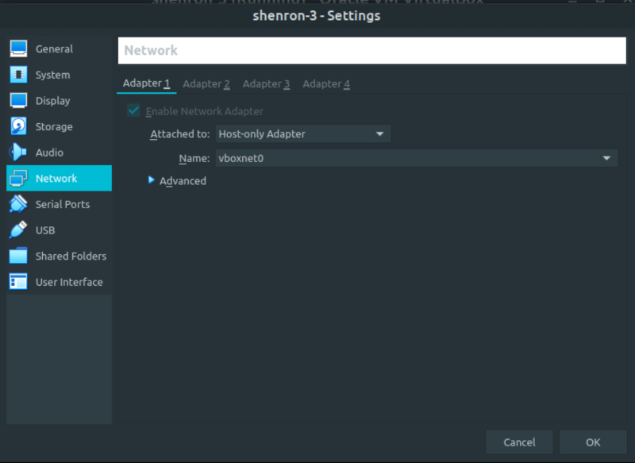
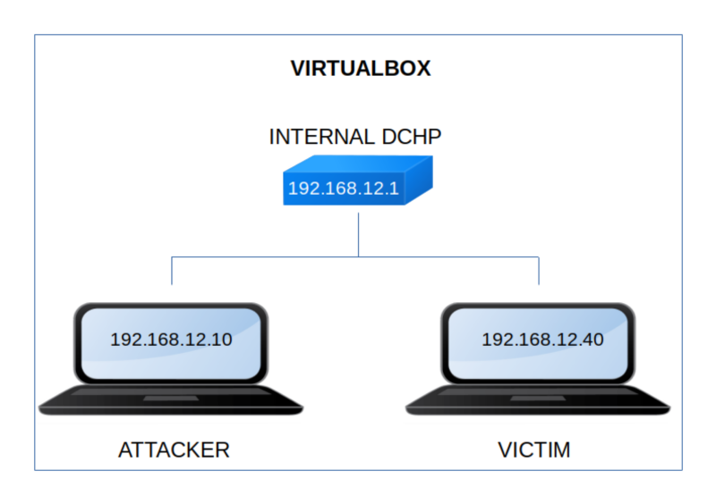

Shenron 3
▸ Shenron 3
▸ 1. Scan Network
▸ 2. Finding Services and Ports
▸ 3. Enumerate
▸ 3.1 Wpscan
▸ 3.2 Create a reverse shell
▸ 4. Explotiation
▸ 4.1 Access to reverse shell
▸ 4.2 Get access as an user (First flag)
▸ 5. Privilege Escalation
▸ 5.1 Execute binary as root
▸ 5.2 Get the second flag.
Difficulty: Easy.
Flag: 2 flags.
Learning:
• Reconnaissance
Scan Network
Find services
• Enumerate
Add hostname to /etc/hosts
Wpscan
Create a “php reverse shell” in Wordpress
• Exploitation
Access to the “Reverse shell”
Get access to an user
• Privilege Escalation
Execute binary as “root”
• Download (Mirror): https://download.vulnhub.com/shenron/shenron-3.ova
• Download (Torrent): https://download.vulnhub.com/shenron/shenron-3.ova.torrent
Install the machine on VirtualBox:
1. Download the file.
2. On Virtualbox choose File->Import Appliance.
3. Select the file “ova”.
4. Accept to import.


Watch your Machine IP.
$ ifconfig
Output:

Diagram
